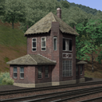

|  |
MG Tower to 8576. Engineer, switch cabs to 9660A and head up the train to Cresson. You are the only engineer on the service now so the helper engine will remain coupled all the way to Cresson. I will clear the signal when it is safe to proceed. |